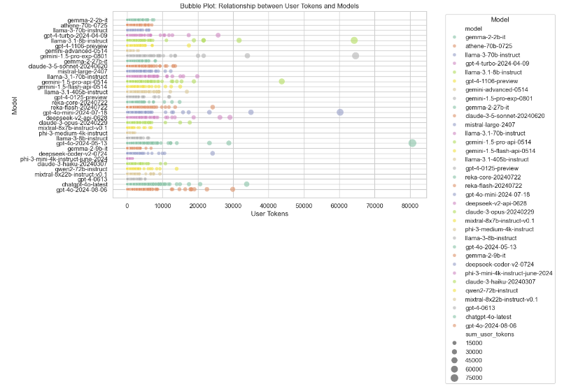
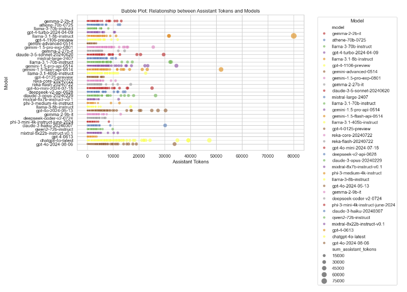

Here, we have fetched the latest battle data from the external source using the requests library. We first saved the JSON to a local file by the name local_file_name.json. Then, we loaded this JSON into a pandas DataFrame and sorted it according to the timestamp, tstamp, in ascending order. After sorting, we saved the DataFrame as a CSV file named battles_data.csv. The verification at the end demonstrates once more that the data has been saved to the necessary file for further analysis.
Converting Unix Timestamps to Readable Dates
This cell converts Unix timestamps in seconds into a more readable date format (YYYY-MM-DD) for easier analysis in a DataFrame. For instance, 1609459200 will represent in this format as 2021-01-01.
Extracting Month and Year from Timestamp
First, we convert the 'tstamp' column to a proper datetime format using pd.to_datetime. Then, we create a new column called 'month_year', which extracts the month and year from the timestamp and stores it as a period, say '2024-08'. We then fetch all the unique month-year combinations and convert them into a list. Finally, for further use or analysis, this list of unique month-year combinations is displayed:
Extracting Unique Dates
Here, we will extract the unique dates in the 'tstamp' column from the filtered DataFrame by changing the datetime values to date format. We then convert these unique dates into a list and display the list of unique dates for further analysis or use.
Excluding Specific Dates from DataFrame
In this cell, the code imports the datetime module, where it excludes the specific dates from a DataFrame and filters that DataFrame to remove any rows that contain these excluded dates. The certain dates that are August 1, 2, 3 in 2024 are omitted from analysis, while the data includes only the time period between Aug 4 to 14 in 2024.
Creating winner_model Column and Cleaning DataFrame
This code creates a new column called 'winner_model', which selects either the 'model_a' or 'model_b' depending on who was the winner. Then, it removes the columns 'model_a', 'model_b', and 'winner' because they are not needed once the column 'winner_model' has been created. The cleaned DataFrame is then returned without showing the index.
Extracting Conversation Metadata
Here we define a function, extract_conv_metadata, that does safe parsing on 'conv_metadata'. Then, it extracts the appropriate token information for the winning model through user tokens, assistant tokens, and context tokens. We use this function to apply to every row in the DataFrame and create new columns out of the metadata extracted. Finally, we join these new columns with the original DataFrame, drop the original 'conv_metadata' column, and display the updated DataFrame without the index.
Filtering Out Unknown Languages
Here, we filtered the DataFrame for those rows for which 'language' does not equal 'unknown'. Then, we display this updated DataFrame without showing an index to make certain that we retain only entries of known languages going forward.
Listing Unique Models
Here, we will be able to get the unique models by pulling a list of unique values from the 'model' column in the DataFrame. Then we are going to find the length of this list, which is going to give us a total count of unique models. Now we print both the list of unique models and its length for the user to analyze further.
Converting Timestamp to Period
Here, we convert the 'tstamp' column to a period with daily frequency and store it in a new column named 'tstamp_period'. Optionally, one may also drop the original column 'tstamp', if it won't be used anymore. Finally, we print a few lines of the updated DataFrame to verify.
Cleaning Up the DataFrame
These cells of code are used to clean up the DataFrame by removing the columns 'category_tag', 'tstamp', 'dedup_tag', and 'month_year' from the dataset because these columns are unnecessary. So we can concentrate on the remaining relevant data.
Comparison of Old and New Dataset
In this section, we compare the old dataset with the new cleaned dataset to highlight the differences and improvements made through the data cleaning process. We examine factors such as missing values, data types, and the presence of unnecessary columns.
The images above display the structure and content of the datasets before and after cleaning. As observed, the new dataset has unwanted columns removed, timestamps converted to readable dates, and entries with unknown languages filtered out.
Exploratory Data Analysis (EDA)
Model Distribution Plot and Language Count Plot
In the plot distribution of models, it visualizes which models are most frequent and which are less common. Each bar represents a model, and its length corresponds to the count of occurrences of that model.
The second plot represents the count of different languages that have more than 50 counts. We are filtering out languages with only more than 50 counts to make the plots easier to focus on the more frequently occurring ones; otherwise, the plot will be cluttered.
Analysis of Boolean Columns
The rest of the graphs explain the Boolean columns:
is_code: There is a higher count in False, indicating that the dataset is not associated with code or programming tasks, suggesting a focus on non-technical content.
is_refusal: There is a higher count in False, indicating that inputs were accepted and users are responsive to input.
information_fulfillment: There is a higher count in False, indicating that the model's information needs were not met.
math: There is a higher count in False, indicating a lack of mathematical proficiency, suggesting that it doesn't involve mathematical reasoning.
specificity: There is a higher count in True, indicating that the model information is specific, providing detailed insights.
domain_knowledge: There is a higher count in True, indicating that the model content is strong in particular fields.
complexity: There is a higher count in False, indicating that the complexity of the topic is addressed in a straightforward manner, implying a simpler approach to questions.
problem_solving: There is a higher count in False, indicating that no problem-solving is clear, which may indicate a lack of critical thinking.
critical_thinking: There is a higher count in False, indicating a lack of creativity shown in the model's response.
technical_accuracy: There is a higher count in True, indicating that the model provides technical information that is accurate and reliable.
real_world: There is a higher count in True, indicating that the model content connects with real-world applications.
Correlation Heatmap of Token Counts
This is a heatmap visualizing the correlation matrix for the numerical columns: sum_user_tokens, sum_assistant_tokens, and context_tokens. The color intensity and numbers in the cells show the strength of the correlation that goes from -1.0 (negative correlation) up to 1.0 (positive correlation). It can be seen from this plot that context_tokens are highly positively correlated with sum_user_tokens with a value of 0.84, while sum_assistant_tokens is moderately correlated with the other columns.
This plot is useful for understanding the relationship of token counts in various model development stages and model selection, especially if the goal is to tune models according to their token efficiency and correlation patterns.
Stacked Bar Plot of Language Distribution Across Models
This is a stacked bar plot showing the distribution of languages across different models. Each bar illustrates a model, while the hues in that bar show the counts across different languages, for example, English, Chinese, Spanish. The plot shows how frequently each of the languages appears in interactions for each model, with English dominating most of the models.
This plot is useful for both model selection by highlighting which models perform well with a particular language and for model development to determine the language handling capability, aiming to ensure that the models are optimized for multilingual tasks.
Line Plot of Token Trends Over Time
This is the line plot of the trends of user tokens, assistant tokens, and context tokens over time. The x-axis represents the time periods while the y-axis shows the total token count for each category. The orange line (assistant tokens) peaks the highest, indicating that assistant models used more tokens compared to user and context tokens.
This provides insight into token usage patterns, helpful in the development of models by keeping track of token efficiency or model selection in finding out which models can handle certain token-intensive tasks efficiently over time. It can also assist in the optimization of token management.
Count Plot of Model Refusals
A count plot comparing the number of interactions for each of the different models, based on whether the model refused to answer (is_refusal). Green bars are for interactions where the model responded, and orange bars represent refusals.
This plot helps to identify models that are most likely to refuse responses. For example, the refusal rate of chatgpt-4-0-latest is higher. Hence, this provides guidance on model selection: select models that would be more dependable with respect to response, and in model development: investigate why certain models refuse and how to reduce occurrences of such.
Language Word Cloud
The word cloud below visualizes the most common languages in this dataset. In the word cloud, the size of each language name represents the frequency of that language within the data. For example, English, Chinese, and Russian are bigger compared to the other names because they occur more frequently in the dataset. Smaller words like Swedish, Dutch, and Tamil represent less frequency. This visualization effectively shows the distribution and variation in the use of language in the dataset.
Model Name Word Cloud
The most frequent models, like "chatgpt-4.0-latest", "gpt-4.0-2024-08-06", and "llama-3.1-70b-instruct", are larger since they appear more often in the dataset. Less frequent models like "gemini-1.5-pro-api-0514" and "deepseek-v2-api-0628" are in smaller text to show how much less they appear compared to others.
Bubble Plots of Token Usage by Model
The two above bubble plots outline the relationship of token usage (user and assistant) with different models. In each of these plots, the size of each bubble denotes the number of tokens, with larger-sized bubbles indicating higher token usage. The first plot shows the relationship between user tokens and models, and the second between assistant tokens and models.
These plots are informative for understanding different model behaviors in light of variable numbers of input tokens and could further drive model development by identifying models that manage tokens more efficiently, as well as model selection by picking out models suitable for token-intensive tasks.


Joint Plot of User Tokens vs Assistant Tokens
This is a joint plot showing the relation between user tokens and assistant tokens. The scatter plot in the middle shows the distribution of these tokens, and the histograms on top and right show the frequency distributions for user and assistant tokens, respectively.
This plot is useful for model development and model selection, as it shows the relation between how many input (user tokens) are given and how many output (assistant tokens) are returned by various models. The plot can help in optimizing token usage for efficiency and locating models that handle inputs or outputs with a large count of tokens efficiently.
Distribution of sum_user_tokens
The plot distribution of sum_user_tokens visualizes with the Kernel Density Estimate (KDE) where it shows that the majority of the token values are near zero, with a line extending toward higher values up to 500,000. This indicates that most users have relatively low token usage, while a smaller subset has significantly higher usage.
Distribution of sum_assistant_tokens
The second plot, the distribution of sum_assistant_tokens, also visualizes with the Kernel Density Estimate (KDE), where the majority of assistant tokens are clustered up to 700,000. While the majority of assistant responses involve a small number of tokens, there are occasional responses with a much higher token count.
Distribution of context_tokens
The third plot, the distribution of context_tokens, also visualizes with the Kernel Density Estimate (KDE). It's similar to the first plot, where the majority of context_tokens values are near zero with a line extending to the 500,000 values. This means that in our dataset, the majority of entries have a low number of tokens (e.g., words, characters, or data units in each context), while only a small number of entries have a much higher token count.
Language Proportion Pie Chart
The pie chart below displays the proportion of languages with over 1,000 occurrences in the dataset, with each segment being representative of a language. This is indicated with the size of the slice proportional to the count. The dominant proportion is English at almost 70%, followed by Russian, Chinese, and others.
This plot helps in model development by highlighting the language distribution, allowing developers to focus on optimizing models for prevalent languages. It also aids in model selection, as dealing with multilingual tasks sometimes requires model choices based on support for a particular language.
Box Plots of Token Distribution by Model
These are box plots of the distribution of sum_user_tokens and sum_assistant_tokens for models with at least 2,000 occurrences. These box plots depict the dispersion in token usage for each model: the median represented by the central line of the box, interquartile range by the size of the box itself, and possible outliers as dots outside the whiskers.
These plots are useful in the model development stage by highlighting token usage consistency and outliers that could be used to optimize the handling of the tokens. They also contribute to model selection by comparing different models based on token efficiency.
Violin Plot of sum_user_tokens by Model and is_code
The following violin plot depicts the distribution of sum_user_tokens for each model, segregated based on the condition if is_code is true or false. The y-axis limits are set to a maximum of 10,000 for better clarity. Here, the violin plot shows the density and range of token usage; hence, one can get insights about how each model behaves with and without code input.
This plot helps in model development for understanding the pattern of token usage when handling code and assists in model selection by pointing out models that manage efficiently with token-heavy tasks, especially for code.
Scatter Plots of User Tokens vs Assistant Tokens
These are scatter plots showing the relationship between user tokens and assistant tokens. The first plot is colored by model, focusing on models with more than 2,000 occurrences, while the second plot is colored by language, highlighting languages with more than 1,000 occurrences. These plots help identify patterns in token usage across different models and languages.
The plots are useful for model development to optimize token handling based on specific models and languages, and for model selection by determining which models and languages are more efficient or better suited for token-heavy tasks.
Histograms of Token Distribution by Language
These are histograms with a kernel density estimate, showing the distribution of user tokens (top plot) and assistant tokens (bottom plot) across languages that have more than 1,000 occurrences. Both plots reveal that for the majority of the interactions, regardless of language, just a few tokens are involved (between 0 and 10,000 tokens), with some outliers at higher token counts. We can further explore language-specific differences or outliers in token usage that might indicate trends in longer conversations.
Additional Exploratory Data Analysis (EDA)
Model Comparison Based on Average Accuracy
This section compares the top 10 models with the highest average accuracy and the bottom 5 models with the lowest average accuracy. Various plots are generated to visualize their performance metrics like Win Rate, humaneval-python scores, Java scores, JavaScript variability, and C++ performance distribution.
Below are the plots generated from the analysis:
Model Performance Metrics Analysis
This section analyzes various performance metrics of models, such as Average WER, RTFx, AMI, Earnings22, Gigaspeech, LS Clean, LS Other, SPGISpeech, Tedlium, and Voxpopuli. Different types of plots are generated to visualize these metrics across different models.